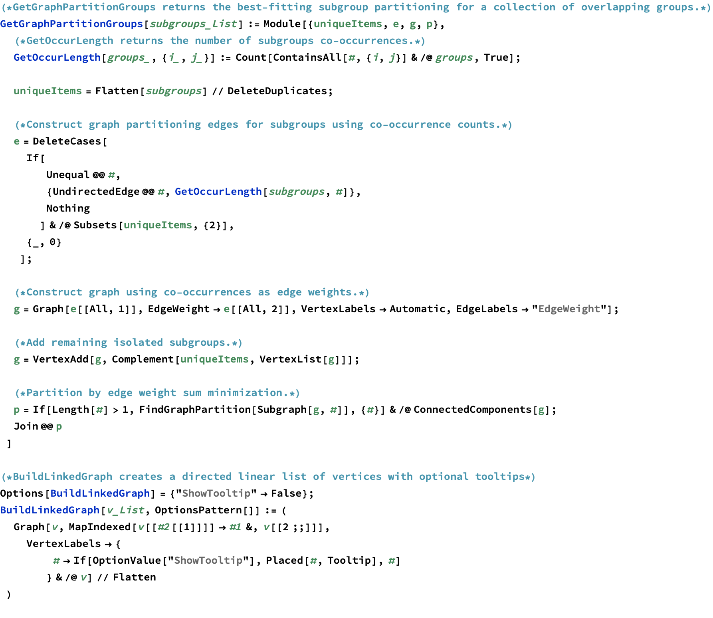
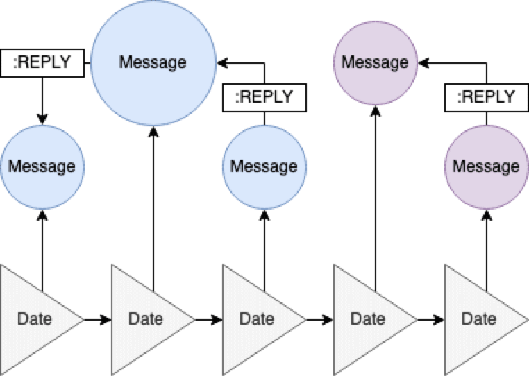
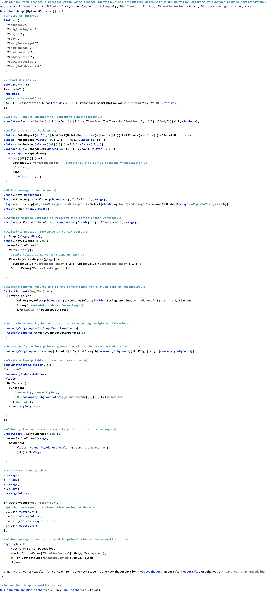
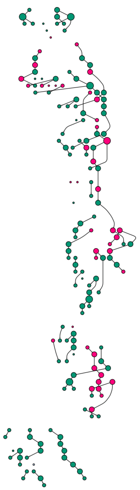
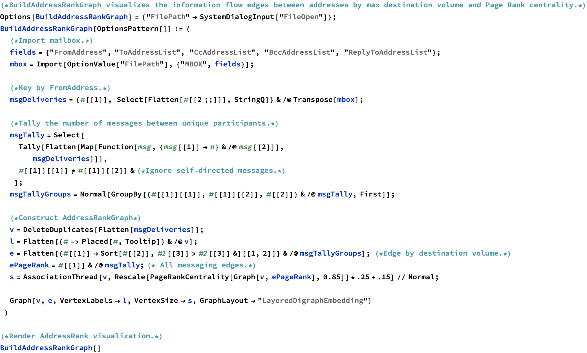
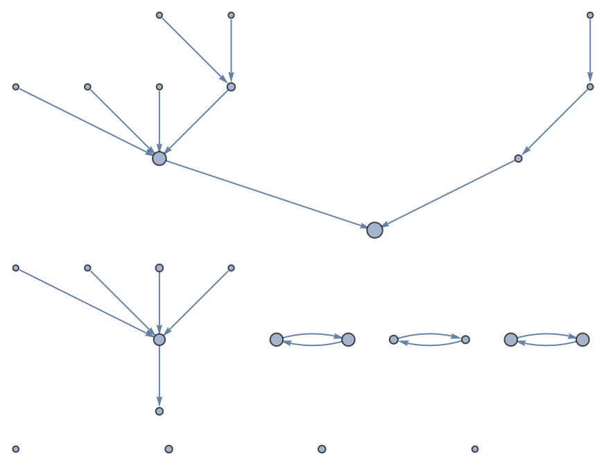

By Ryan Bell for Wolfram Summer School 2020.
Constructing directed graphs of email conversations
Abstract: InboxGraph is a
property graph representation of mail server archive data, in which
message collections are presented in a higher-dimensional space than is
possible with traditional user interfaces with linear timestamped
constraints. RFC-822 message parsing is used to extract message
trajectories between servers and network participants, forming a
metadata-rich lattice of vertices and edges inside a directed graph.
Asymmetrical relationships between participants are used to calculate
Address Rank measurements of information flow importance and to partition
the graph into best-fitting communities, opening new channels for
organizational optimization. Additional layers of natural language
processing and data export to open formats permit further interactive
exploration, querying, and discovery of deeper associations within the
graph.
Section 1. Community partitioning & Time series helpers
Linear time series subgraph construction and best-fitting community
functions.

Section 2. Directed InboxGraph visualization.
Visualize a MBOX archive thread flow diagram.
(Example uses a
mailing list archive from https://lists.apache.org.)



Section 3. AddressRank visualization.
Calculating the page rank centrality score for addresses and link by
max message destination volume.
(https://en.wikipedia.org/wiki/PageRank#/media/File:PageRank-hi-res.png)
PageRank is a graph analysis algorithm which measures the relative importance of vertices within a directed graph using the number of edge links it receives, the propensity (out-going edges) of the linkers, and the PageRank centrality of the linkers.

